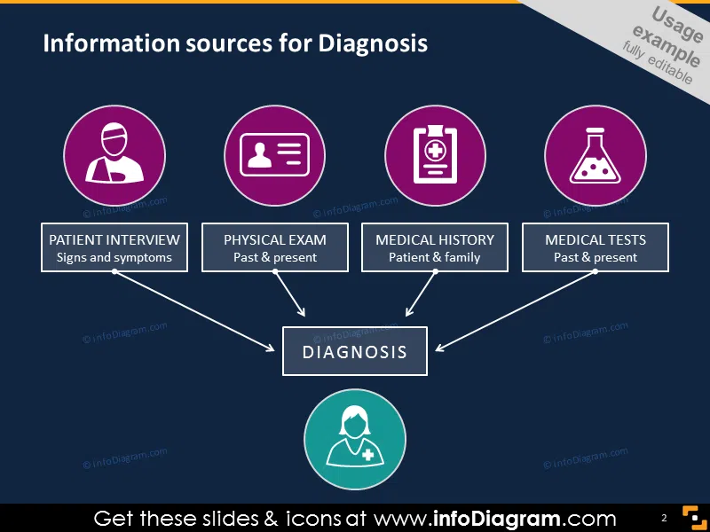

The Future of AI in Medical Diagnosis


Artificial intelligence is rapidly transforming the field of medical diagnosis, offering unprecedented opportunities to enhance accuracy, efficiency, and accessibility in healthcare. As a medical student with a passion for technology, I've been closely following these developments and want to share insights into how AI is reshaping diagnostic medicine.
The Current Landscape of AI Diagnostics
AI-powered diagnostic tools are already making significant impacts in several medical specialties:
- Radiology: AI algorithms can detect abnormalities in X-rays, CT scans, and MRIs with accuracy rivaling human radiologists.
- Pathology: Machine learning models analyze tissue samples, identifying cancerous cells with remarkable precision.
- Ophthalmology: Retinal scans interpreted by AI can diagnose diabetic retinopathy and other eye conditions.
- Dermatology: Image recognition AI helps identify suspicious skin lesions that may indicate melanoma.
"AI won't replace doctors, but doctors who use AI will replace those who don't. The future belongs to clinicians who can effectively collaborate with intelligent systems."
Technical Foundations of Diagnostic AI
The most effective diagnostic AI systems typically combine several technological approaches:
1. Deep Learning for Image Analysis
Convolutional Neural Networks (CNNs) have revolutionized medical image interpretation. These algorithms learn hierarchical patterns from vast datasets of labeled medical images, enabling them to recognize subtle abnormalities that might escape human notice.
2. Natural Language Processing for Clinical Notes
NLP algorithms extract meaningful information from unstructured physician notes, lab reports, and other text-based medical records, helping to identify diagnostic patterns across patient populations.
3. Multimodal Data Integration
The most advanced systems combine imaging data with lab results, genomic information, and electronic health records to generate comprehensive diagnostic assessments.
Clinical Benefits and Challenges
The implementation of AI diagnostics offers several key advantages:
- Improved Accuracy: Reduces human error and variability in interpretation
- Increased Efficiency: Processes large volumes of data quickly
- Enhanced Accessibility: Brings specialist-level diagnostics to underserved areas
- Early Detection: Identifies subtle early signs of disease progression
However, significant challenges remain:
- Ensuring algorithmic fairness across diverse patient populations
- Maintaining physician oversight and clinical judgment
- Addressing data privacy and security concerns
- Navigating regulatory approval processes
The Future: Augmented Intelligence in Medicine
Looking ahead, I believe the most promising applications will focus on augmented intelligence rather than artificial intelligence - systems designed to enhance rather than replace physician decision-making. Key areas of development include:
- Predictive Diagnostics: AI models that can forecast disease risk before symptoms appear
- Personalized Treatment Planning: Systems that recommend tailored therapies based on a patient's unique characteristics
- Real-time Decision Support: Tools that provide clinicians with evidence-based suggestions during patient encounters
As medical professionals, we have both an opportunity and responsibility to shape how these technologies are implemented to maximize patient benefit while maintaining ethical standards and humanistic care.